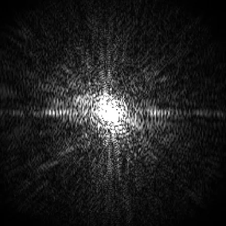
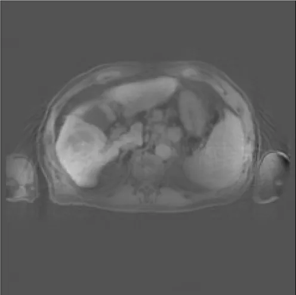
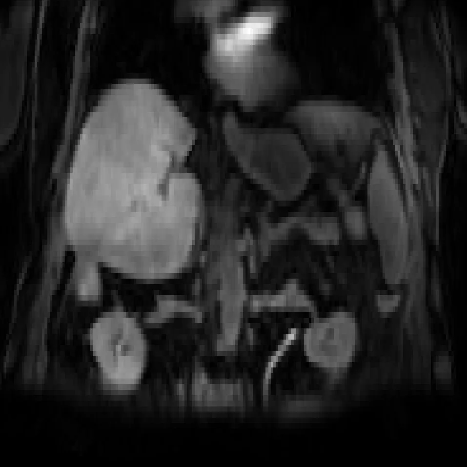
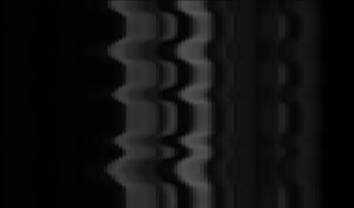

PDMR：从单次测量进行潜空间运动跟踪的动态 3D MRI 前瞻重建Prospective Dynamic 3D MRI Reconstruction via Latent-Space Motion Tracking from Single Measurement
涉及动态 3D 重建和运动场估计，但应用为医学 MRI，与机器人 SLAM 关联较弱。
一句话工作总结
用离线学习的低维运动潜流形加速动态 3D MRI 的在线重建与运动估计。
摘要
PDMR 面向 MRI 引导放疗等低延迟场景，先离线学习低维运动场潜流形，再在在线阶段用 tri-plane 表示快速适配变形向量场，从稀疏当前测量中完成动态三维 MRI 重建和运动估计。实验显示其在数字体模和腹部 MRI 上取得高保真、时间一致的重建结果。
Prospective reconstruction is crucial in many clinical applications such as MRI-guided radiotherapy, which demands accurate image reconstruction and fast motion estimation from currently acquired measurements. However, prospective reconstruction remains challenging due to ultra-sparse sampling and stringent latency requirements. In this work, we propose PDMR, a Prospective Dynamic 3D MRI Reconstruction framework with latent-space motion tracking. Our core idea is to learn an efficient and generalizable latent manifold of motion fields offline, enabling rapid online adaptation for prospective reconstruction. Specifically, we parameterize the deformation vector fields (DVFs) on a low-dimensional manifold, effectively reducing the search space for fast online adaptation, and employ a tri-plane representation to achieve geometry-aware and memory-efficient encoding of 3D motion. Experiments on both XCAT digital phantoms and in-house abdominal MRI datasets demonstrate that PDMR achieves high-fidelity and temporally consistent reconstruction across multiple prospective scenarios (Immediate and After-2min), outperforming state-of-the-art retrospective and online methods. Our results suggest a promising pathway toward ultra-fast, motion-aware prospective MRI reconstruction in clinical practice.
图表/页面预览

{kind=link}

{kind=link}

{kind=link}

{kind=link}

{kind=link}